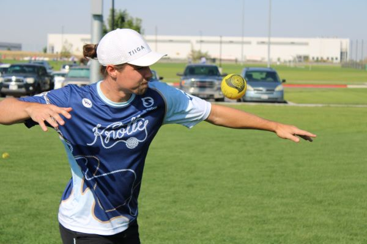

So you want to reverse cut? Let's learn how!!
A reverse cut serve is used to make the ball jump off the net in the opposite direction of a cut serve. A good reverse goes to the opposite hand of the reciever that cut would. Reverse cut is the hardest serve to master but it is a deadly serve to have in the arsenal. When a cut serve is working and you are beating recievers wide, they are going to cheat for your cut. Cheating for cut is when the reciever steps towards the direction of the way they think that your serve is going to go. Reverse cut has the ball jump off the net to the right side when hitting the ball from right to left. It is mind bending to look at and an impressive spikeball achievement.
-
Start by standing at the serve line and throwing the ball onto the net while twisting your hand like you are opening a door by turing a door knob to the right.
- Keep your elbow starting high by your ear and push down when throwing the ball
- Then use your wrist only to get the ball moving off the net. aim for the front side of the net near the rim.
-
Practice serving pretending that you are pushing the ball with your hand instead of smacking the ball. Finish down rather than across your body.
- This serve can be used to cut wide, but it can also be used to look like a cut serve and then jam the reciever. Mix it up and get experimental with it!
